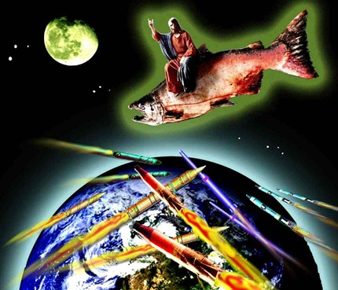
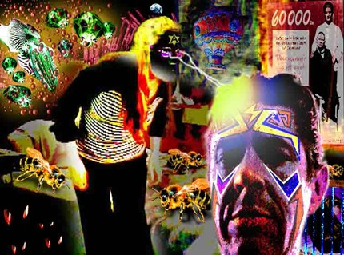
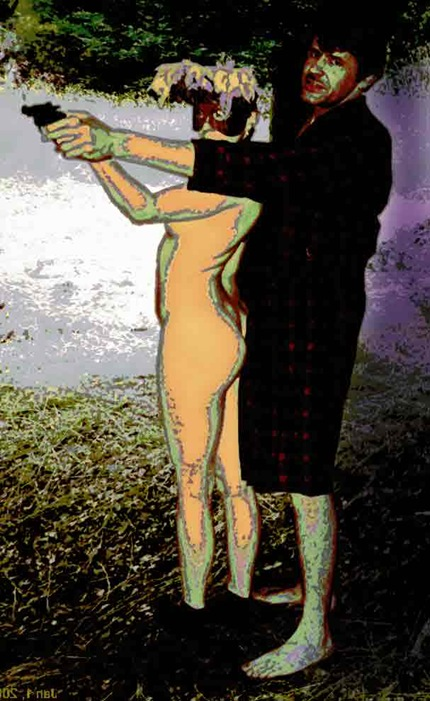
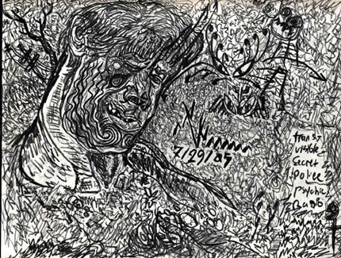
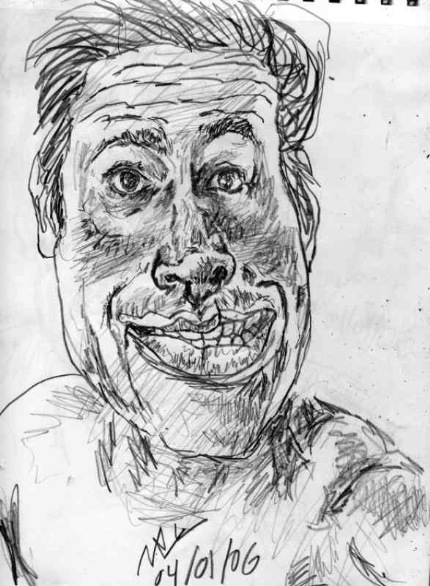
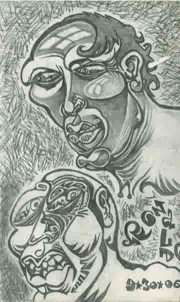

Commenter Murdered by the Media?

{kind=link}

In recent weeks EMToast has received a number of comments from a visitor by the name of Sickjunior. After visiting his blog MURDER BY MEDIA I learned that he suspects himself to be the victim of a lifelong conspiracy by the entertainment media to trap him in California, destroy his personal life, addict him to drugs, manipulate him with women, bug his home, broadcast his life, cultivate racism, sabotage his art career, and potentially sacrifice his life for charity. I had to interview him.
Toastmaster:I was thinking, how about I do an interview with you. What do you say Sickjunior?
Sickjunior: Uh, well, no one would believe my story, but hell, wouldn’t hurt to get the word out, I guess. At any rate it remains to be seen if they will allow you to interview me or at least post it.
Toastmaster: Who do you think wouldn’t allow me to interview you or post it? Does this have anything to do with “Murder by Media”?
Sickjunior: Yes. Absolutely. They’ve been manipulating and broadcasting my life for at least 35 years, by my estimate, possibly my entire life. At any rate, strange things have always been going on since I can remember.
They’ve been trying to strand me here in the Bay Area for over 25 years. Now that they’ve succeeded they will not let me go.
They don’t want me to make any statements or form any relationships in the outside world that they don’t control.
Toastmaster: Who are “they”?
Sickjunior: They are the entertainment media. They are your masters, the harbingers of the coming corporate dictatorship.
Toastmaster: Why you?
Sickjunior: Good question. Because I’m so entertaining I suppose. I know it sounds crazy, but I think it’s supposed to.
In fact I will have to weigh my words carefully or I’ll sound like just another schizophrenic, and not what I really am, the world’s child, the guy everybody loves to hate.
Toastmaster: How have the entertainment media been broadcasting your life?
Sickjunior: They have cameras and microphones in my room, in my car, and at my work.
Since people are always giving me their old clothes, I have no doubts they’re in there as well, as well as tracking devices.
Toasmaster: How have they been manipulating you?
Sickjunior: Every acquaintance and girlfriend I’ve had has been working for them. Remember ‘Total Recall’ when Arnold starts to remember his mission, and his wife and friends try to kill him because they are working for the agency? I had a similar experience when I finally figured out what had been going on.
Toastmaster: How have they stranded you in the Bay Area?
Sickjunior: This time when they got me up here, they made sure I can’t leave. The propaganda being broadcast against me is so inflammatory now that I can’t make ANY friends. No one will hire me, or do a damned thing for me. I have a part time one day a week job at a liquor store a few towns over, and I am lucky to have even that. Without friends or money, I’m pretty stuck. Stuck and fucked. They monitor my phone calls and online activity and likely tamper with my mail too, so I can’t, like, strike up a long distance romance or something and get away that way.
Because they control my internet activity they can control who I can communicate with.
{kind=link}

Toastmaster: How do they control your relationships?
Sickjunior: They keep sending me these women who like ‘fall in love’ with me after a week or two. This has been going on for over 20 years now. Surely you can see the genius in that. These women aren’t interested in me, they just want to be part of this project. The one before last got me heavily involved with meth and really messed me up that way. You know most chicks will do anything to be on TV.
Keep in mind, they had me on meth a number of years, and you know how charming that can make you. Also, the women I was with would deliberately push my buttons while I was in stressful situations to make me blow my stack. They did this several times.
I wish they’d send another though. It’s been a while and I’m pretty horny. (ha ha)
I strongly suspect they have been documenting my sex life. All my girlfriends encouraged me towards strange (to me at least) sexual practices and wanted me to always talk dirty to them. Also, whenever we got hotel rooms, it was always the same room and when we checked out, the hotel keepers always looked and behaved towards me in the most curious of ways. They’ve filmed me doing all kinds of stuff that even I, who have long since resigned myself to the fact that I have NO privacy, blush to think about everyone seeing.
Toastmaster: How else?
Sickjunior: In my late teens they kept sending me guys. I think they wanted me to be gay, but I just wasn’t interested.
They got me involved with drugs big time, and, to a lesser extent, fascist politics.
Also they have sent me lots of people preaching white supremacy. I think it’s safe to say they wanted me to be a Nazi. Although I do think it’s a shame the white race is dying, I’m totally nonviolent and don’t like picking on people.
Toastmaster: Would we know any of the girls they sent to you? Did any of them go on to become famous?
Sickjunior: Many of the women I was with went on to high paying jobs that I don’t think they really deserved, but it was like a reward or something. Some work in entertainment, not as actresses though. One seems to have gotten several vacations out of it, two to Europe, and a college education. But what do I get? Me, the fuckin star? Nada. Just a lot of grief and despair.
Toastmaster: How do you convince people this is real?
Sickjunior: I don’t feel I need to convince people this is real as I’m sure most people already know about it, at least here on the west coast. I just want people to know that I’m really a loveable guy, and not the monster they see on the screen after the manipulating and editing.
{kind=link}
Toastmaster: You’ll have to forgive me as an East Coaster, but I’ve never heard anything about this. Where have you been on television that the media portrayed you in a bad light?
Sickjunior: It is, at present at least, a long running cable television show on Community Access Television. They have several stations in California, especially in the Bay Area. I believe it’s Channel 29 San Francisco.
I hired a P.I. to find this stuff out, but he ripped me off and told me I was nuts. So much for his ethics. I then did my own investigation and found out these facts. The woman I used to live with, in her basement, worked at the Irvine Foundation on Market St. in San Francisco. Channel 29 is down the street from where she worked. She was head of multimedia communications for that ‘non profit’, and frequently put together programming that aired on that station.
Toastmaster: Let me understand. There is a cable show that you are on? Do you appear willingly? Can we know the name of the show?
Sickjunior: I don’t know the name of the show, web address of the website, or which radio station the radio broadcast was on. Naturally the people watching this garbage in my building put on music during the station breaks so I can not hear any of that information. I am only guessing the channel based on the reasons I have given. It may very well NOT be channel 29, but I am confident it is Community Access Television.
Criminal asshole television I calls it. C.A.T., which is why i despise cat people. I generally steer clear of people with cats on their avatars. Usually disagreeable bastards anyway.
Toastmaster: There was a radio show?
Sickjunior: As for the radio show, it seemed everybody knew and was discussing what I talked about in therapy on the busses. People were stopping by my doctor’s office when I was waiting to be seen and asking me what time my appointment was. My doctor had no idea who they were. I think it’s because they heard my sessions on the radio, knew what time they were, and wanted to see what I looked like.
Also my doctor used to drive me to the BART (Bay Area Rapid Transit) station after our meeting. He always fiddled with the radio knobs before we left, then tried to engage me in controversial topics of conversation. Obviously he was taping or transmitting it. I’m sure he had a set up in his office too, but it didn’t require him to mess with it in front of me.
Before I finally confirmed that I was a big star, I used to have terrible depression, and, despite this, or because of it, this doctor showed me where in his office he concealed a loaded gun. I mean, WTF!? That right there shows you the ethics of these people.
{kind=link}

Toastmaster: Any other forms of media?
Sickjunior: Aside from the cable show, which seems to run 24 hrs these days, there’s also a web site where you can read all my emails and there are also links to places I am online, and a radio show where they used to broadcast my psychiatric sessions.
Toastmaster: For what purpose do you believe the media is doing this to you? What do they get out of it?
Sickjunior: I know it’s kinda weird, but it’s my present theory that I’m being prepared as some kind of sacrifice. I believe the show generates charitable revenue to help poor black kids go to college. I have reasons for believing everything I have stated, so if you think it’s important to give my reasons, just ask. I’ve had to figure this all out with deductive reasoning alone, oftentimes I’m working with scanty evidence, but I’ve done the best I can.
This whole thing has always been covert. I always had a strange fantasy ever since i was little, that I was being broadcast on TV, maybe it was an intuition. I dunno. I thought for years that I was either crazy or that God was fucking with me, but when I finally heard this show, suddenly everything in my life made sense for the first time and I felt perfectly sane, till I found out there was nothing I could do about it, then I felt crazier than ever.
{kind=link}

Toastmaster: Tell us more about this sacrifice. Do you believe this will occur on TV to generate charitable revenue?
Sickjunior: As for my being killed, that’s always a paranoid concern of mine. But realistically, if I die, the show ends, and, as we know, the show MUST go on. I worry that I may be in danger now that I’ve discovered the truth and have threatened to pull a Houdini and show up in another town in another part of the country, get a lawyer and get these sunzabitches, but again, they know what a creature of habit I am (they’ve been studying me all my life) so I doubt they take me very seriously.
People have been, over the years, conditioned to despise me. I have been tarred with many stigmatized epithets. They’ve gone out of their way to make sure I represent everything our PC society hates, misogyny, racism, drug addiction, selfishness, dishonesty, you name it. Maybe they feel it would be the feel good show of the century if I am raped and murdered by deranged blacks. But again, since it would terminate what must likely be a money making machine this may be my own paranoia. I hope so.
Toastmaster: Do you fear that EMToast will become the victim of some type of media retribution after we publish your story?
Sickjunior: No, I do not think your website is in any danger, they are not concerned about my publicity as they feel they have complete control over that. People not familiar with it will think I’m crazy, and those who know it’s true hate me from the footage they’ve seen of me so they don’t give a shit about my rights. They should though, because I’m only the beginning. Damn you Warhol and your 15 minutes of miserable fame!
The only thing they worry about is my making any real money, because then I’d be a threat to them!
Toastmaster: Have they ever let you make money?
Sickjunior: They did allow me an art career for a short space of time. I showed with Robert Williams, The Pizz, Bad Otis Link, and others of that scene (and mine was the weirdest work there!). I was also in small magazines. Flipside twice, Spazz and Noho, which were two local magazines in the San Fernando Valley, and Exclectic, which I’m sure was one of theirs. It had the worst layout I’d ever seen. These people have lots of disposable income.
I still have a box of promotional copies of the issue that featured me. I was even invited to a big party of theirs which my intuition warned me not to attend as it was in the very area that ‘Cat’ lived. Cat was supposedly my landlord’s boyfriend. He was always over messing with her computer, allegedly. Although his name was given to me as Catelen, I believe this was a joke of theirs as I think he worked for C.A.T. and set up many of the hidden microphones and cameras which I know were situated in my room, computer and car
Many people actively encourage me to keep making art even though they have no interest in owning any. “every part of the buffalo”, I bet they plan on making money off my art after I am dead. They have certainly laid the groundwork for my post mortem fame, which, although cool from an art history standpoint, does me no material good while I am alive.
I never turned a profit on my work. I had to matt and frame all my own work, very detailed pen and ink pieces that took on the average of 100 hours to produce, and the gallery, Gallery X in Hollywood, took 60% of the selling price. I never sold anything for over $350, so I always actually lost money.

Toastmaster: Can you expand on why the media is doing this?
Sickjunior: Sometimes I think I must have pissed off some stupidly rich people, likely Jews, who are big in media. But it has been going on since I was a child.
Perhaps my grandfather gave permission for this show when I was young. I was a bit of a handful, and the idea that he would be able to materially profit off of me may have appealed to him.
Someone has suggested that maybe my drug addict mother may have sold me to a television station. Although this scenario would make an excellent story, it seems to me unlikely. I do plan on writing a book about this as I believe I am the only person in human history to have been persecuted thus. It’s a story that needs to be told so that, hopefully I will be the last.
Gotta hand it to these media dinks, they really know how to write a trashy good show. If I had went for everything they’ve thrown my way, I’d be a gay Nazi with a serious drug habit living in Berkeley. NOW THAT’S ENTERTAINMENT!!
Toastmaster: What effects do you feel this has this had on your personal life?
Sickjunior: I find it interesting, and also sad and typical of human nature, that not more people feel bad about how this show has twisted me over the years. Talk about a glass ceiling. Nobody could live through something like this and it NOT affect them in profound and personal ways.
I have encountered some women who were obviously sympathetic, but they were clearly afraid to get involved.
It is because of this infernal exploitation that I have never married and started a family. It is also why I never aggressively pursued sexual conquests, aside from the fact women came after me usually, I could never trust anyone, especially women, because I always felt they were keeping big secrets from me, so trust was always a major stumbling block for me.
I felt bad for years that I could never get REALLY close to anyone. Now that I know why it’s no wonder. Ironic how my ‘fame’ has actually prevented me from enjoying my life to the fullest.
But again, this was never intended to benefit me. I have been made an unwitting tool by designing people with wicked intentions. Talk about a wasted life. Pisses me off when people say stuff like ‘how watching me ruin my life puts their own in perspective’. That only goes to show what brain washed hate zombies they are. I never had a chance even to ruin my life.
My life has never been my own. But everyone goes out of their way to do any little chickenshit thing they can to mess me up. Social workers have deliberately sabotaged my education and vocational rehabilitation, cashiers intentionally pass me counterfeit bills frequently and short change me, and i don’t even want to go into what all the losers in my building put me through on a daily basis. All this stuff was created and transmitted without my knowledge or consent, yet I am never endingly being punished for it. I know life ain’t fair, but DAMN!!
Toastmaster: What can you do about it?
Sickjunior: Hopefully i will live long enough to sue these bastards back to the stoneage, but local lawyers hang up on me the second they hear my voice.
I only pray it will end well. no middle ground, its either “GET RICH OR DIE!”
Maybe this (interview) will finally bring me some help. My neighbors were really mad last night and people were having loud arguments last night, worse than usual, and people are ignoring me and sending me viruses on Facebook. That’s out of the ordinary so I take it as a good sign.
They don’t like to see ANY changes in my life, those petty bastards!
This is really a life or death situation for me. These people are out to snuff me. I can see it’s entirely up to me to save myself. It doesn’t look good though as it’s just me against billions of delusional idiots. This thing just never ends.
Toastmaster: Okay. Thanks SJ. I think we’ve probably covered it all. Any closing statements you would like to make before we wrap it up?
Sickjunior: Yes. just one thing. “May God have mercy on your miserable souls.”
God told me to pass this along too…
“Harken unto the word of the Lord thy God, sons of dust that ye may save yourselves! Wo unto you unworthy sinners, generation of vipers, take it not upon yourselves to defy me yet again and crucify my only begotten son twice or i shall smite your seed mightily and put a curse upon thee which will humble you before the abominations which I have created to punish thee for thy transgressions!
Thus sayeth the lord thy god, the god of Abraham and Moses, and yay, Harpo, Zeppo and Gummo too were my prophets. Be liken unto them and heed my warning! Lest a hair on my son’s head be harmed or pushed out of place, wo unto you mankind for all the plagues of the old testament shall rain down on you and the living will envy the dead. thus sayeth the Lord thy God!!”
{kind=link}
Sickjunior’s Closing Statement:
I'm sure everybody gets that the above quote from God is a joke, but let me seriously make this closing statement.
Although this community and Community Access Television are constantly in efforts to try and take away my housing, get me fired from my crummy job and try to stop my government checks, among other things, one 'good' thing out of all of this is that they lost absolutely no time in whisking me off to one of their psychiatrists to have me officially declared schizoid when I announced that i had finally figured out what was going on.
They did this primarily to compromise my credibility, especially because at the same time I shared this revelation I also announced that I was giving up drugs, despite the fact I am rudely discouraged from attending 12 step meetings around
here by the local dry drunks and wet brained drug addicts. I say it's a 'good' thing because since I am legally insane I have more rights than the average person, so, especially here in this 'liberal' community, it will prove much more difficult for them to do any of these things than it otherwise would because I will fight them with all the means available to me.
I have not done, nor am I doing, anything that would further ruin my life were I found out. My only concern is, that since literally
everyone is against me, and I know for a fact these people have big connections in all the local police departments, and based on some strange experiences I have had (as alluded to in my blog), that what they may well be planning is to try and set me up for some heinous crime and throw me in prison with the trash of sub humanity where my days of terror will be numbered.
There is the possibility that they won't wish to take a chance on trying to set up a totally innocent man with a crime he did not, could not commit, and, since the only avenue of escape I see open to me is to just hit the road with nowhere to go, maybe they are trying to spook me into doing that. Either way, whether I die of hunger and exposure by the side of the freeway or am killed by psychotic criminals it is an ugly picture. Let me just say that it is not only grossly unethical, but sickeningly immoral for any person, or organization of people to have or wield this kind of sadistic control, over an innocent individuals life, and I believe this entire community, if not the world, will some day be harshly called to task for it.
And all for the sake of 'entertainment' and hypocritical 'charity'? Shame on all of you for allowing this.
Artwork provided by Sickjunior.
Comments